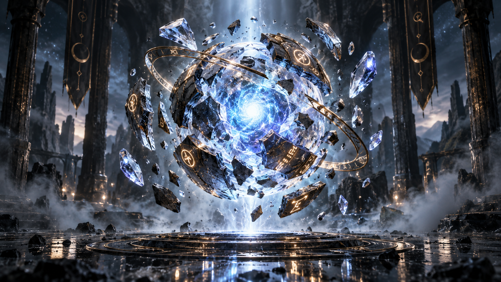

FAZ 13 / RESPONSIVE + MOBILE OPTIMIZATION
ONE SCENE.
FIVE DEVICE TIERS.
FAZ 13; desktop, tablet, mobile ve düşük güçlü cihazlar için aynı 11 saniyelik scroll-controlled 3D sahneyi farklı DPR, LOD, kamera kompozisyonu ve touch davranışıyla çalıştırır.

DESKTOP HIGHDPR ≤ 1.80
01 / HEROFULL CINEMATIC FIELD
Full environment, DOF, high shadow budget, mouse parallax and desktop GLB.
TABLETDPR ≤ 1.35
ADAPTIVEREDUCED ORBIT
Narrower camera arc, no DOF, reduced particles and native touch when needed.
MOBILEDPR ≤ 1.18
PORTRAITORB MOVES UP
Camera composition lifts the hero object above the bottom narrative zone without moving the core world origin.
5QUALITY TIERS
46 FPSDPR DEGRADE THRESHOLD
56.5 FPSDPR RECOVERY THRESHOLD
16–48BEAM SEGMENTS
44–260ENVIRONMENT DUST
PASS — Native touch scroll, adaptive DPR, mobile GLB selection, safe-area, dynamic viewport, environment LOD, camera re-composition, ChapterRail + SceneHUD mount.